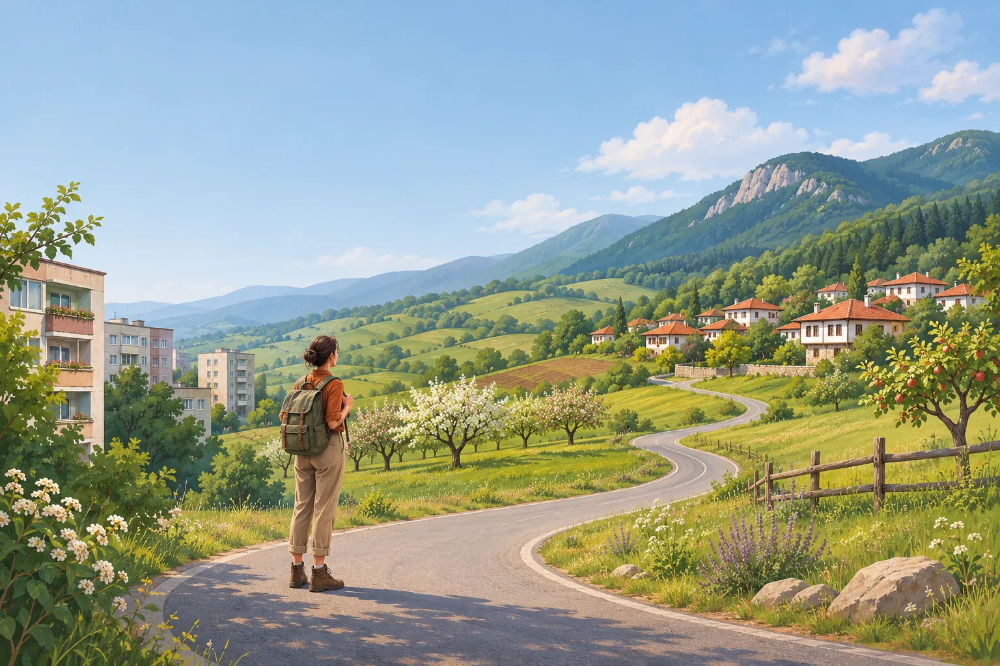

FMI Open Data Hackathon · 20.11.2026 · маса 8
nakade.
Открий къде в България пасва животът, който искаш.
Открий мястото → Пробвай живота → Планирай
Token Burners: Димитър Рачев, Борислав Костадинов, Кристиян Гешев
nakade.app
01 · Проблемът
Местенето е голямо решение, което взимаме на сляпо.
100 203
души се преместиха в друго населено място в България през 2025 г.
44% град → град · 25% село → град
22% град → село · 9% село → село
Източник: НСИ, „Население и демографски процеси 2025“, 29.04.2026
Има ли лекар и училище наблизо?
Колко ще пътувам до работа или до града?
Ще имам ли нормален интернет?
Колко ще ми струва зимата?
Отговорите са разпилени в много различни източници. Засяга семейства с деца, хора, които работят от вкъщи, и всеки, който мисли да се върне в родния край.
02 · Целта за днес
Човек описва как иска да живее и вижда кои от 90 места в България му пасват, защо, и как би изглеждал денят му там.
30-те най-големи града и по 2 по-малки места около всеки. Всеки факт с източник.
03 · Решението и данните
От отворени данни до отговор
1 · Източници
7 източника
OpenStreetMap, OSRM, Open-Meteo, Ookla, НСИ (преброявания 2011 и 2021), Агенция по заетостта, обяви за имоти.
2 · Обработка
4 050 факта
90 места × 45 показателя, вързани към ЕКАТТЕ код. Всеки факт пази източник, дата и статус: проверен, изчислен или ориентировъчен.
3 · Съвпадение
Профил ↔ място
10 бързи или 30 подробни въпроса дават тегла по 7 измерения. Задължителното се проверява, желаното подрежда.
4 · Обяснение
Само от фактите
„Защо пасва“, денят там и планът се сглобяват от фактите и сочат източника. Нищо не се измисля.
Защо тези данни: отворени и официални са, покриват цялата страна, повечето до ниво село, и могат да се обновяват автоматично. Селото оценяваме заедно с околността, не само в границите му.
04 · Демо на живо
Да го видим в действие
1
Профил: как искаш да живееш
2
Swipe през местата, които ти пасват
3
Един ден там
4
План за преместването
Резервен вариант: видеото вдясно, пуска се с клик.
05 · Резултати
Какво показаха данните за 90 места
Лекар
52/60
малки места нямат отбелязан лекар в OpenStreetMap. Медиана до най-близкия: 7,3 км по права линия.
Отопление
73–113%
нужда от отопление спрямо София: от Поморие до Мърчаево.
Интернет
99 Mbps
медиана на фиксирания интернет в малките места. За всички 90: 142 Mbps.
Път
21 мин
медиана с кола от малките места до областния град.
Вместо „в селото няма лекар“ показваме колко далеч е най-близкият и откъде го знаем. Така човек решава по факти, не по слухове.
06 · Какво следва
Накъде продължаваме
Цяла България
Всички населени места, не само пилотните 90.
Официални регистри
Лекари и училища от регистрите на МЗ и МОН, не само от OpenStreetMap.
Реален транспорт
Разписания на влакове и автобуси и време с кола до болница.
AI разказ
Езиков модел преразказва фактите по-човешки, като цитира всеки от тях.
Тестове с хора
С хора, които наистина мислят да се местят.
На английски
За българите в чужбина, които мислят да се върнат.
Въпроси?
Благодарим!
Token Burners: Димитър Рачев, Борислав Костадинов, Кристиян Гешев
Кодът в GitHub